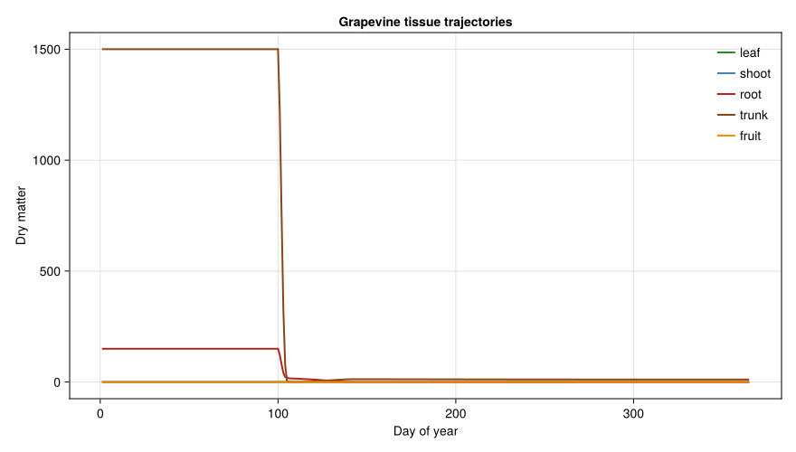
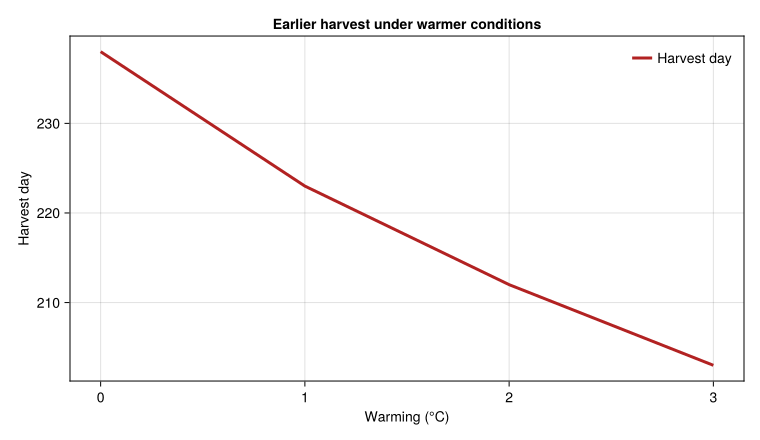

Grapevine Carbon-Nitrogen Model
Simon Frost
- Background
- Model Parameters
- Tissue Populations
- Photosynthesis Model
- Tissue-Specific Respiration
- Nitrogen Dynamics
- Weather: Wiedenswil, Switzerland (1988)
- Approach-Aware MP/BDF Composition
- Seasonal Simulation
- Carbon Budget Analysis
- Tissue Trajectories
- Climate Sensitivity: Warming Scenarios
- Key Insights
Primary reference: (Wermelinger et al. 1991).
Background
This vignette implements a demographic model of carbon and nitrogen assimilation and allocation in grapevines (Vitis vinifera, cv. Pinot Noir), following Wermelinger, Baumgärtner, and Gutierrez (1991). The model tracks five tissue populations (leaves, shoots, roots, trunk, fruit) with:
- Carbon assimilation via photosynthesis (Beer’s Law canopy model)
- Nitrogen uptake from soil
- Priority-based allocation of both C and N
- Tissue-specific respiration with Q₁₀ temperature scaling
- Leaf age-dependent photosynthetic efficiency
- Phenological development in degree-days above 10°C
Reference: Wermelinger, B., Baumgärtner, J., and Gutierrez, A.P. (1991). A demographic model of assimilation and allocation of carbon and nitrogen in grapevines. Ecological Modelling 53:1–26.
Model Parameters
using PhysiologicallyBasedDemographicModels
using CairoMakie
# Base temperature threshold for grapevine
const GRAPE_T_THRESHOLD = 10.0 # °C
# Development rate (linear degree-day model)
grape_dev = LinearDevelopmentRate(GRAPE_T_THRESHOLD, 38.0)
# Key phenological benchmarks (DD above 10°C from Jan 1)
const DD_BUDBREAK = 36.0 # Budbreak
const DD_BLOOM_START = 336.0 # Beginning of bloom
const DD_FRUIT_SET = 380.0 # Fruit set (approximate)
const DD_VERAISON = 800.0 # Veraison (berry softening)
const DD_HARVEST = 1100.0 # Harvest maturity1100.0Tissue Populations
Each tissue type (leaves, shoots, roots, trunk/canes, fruit/berries) is modeled as a distributed delay population. The developmental time τ represents the tissue’s functional lifespan.
k = 30 # Substages per population (Erlang distribution)
# Tissue populations following Table 1 of Wermelinger et al.
# τ values: leaf=750 DD, shoot=600 DD, root=150 DD,
# trunk=permanent (3000 DD), fruit=600 DD
# Initial conditions (g dry matter, approximate for 4-year vine)
leaf_delay = DistributedDelay(k, 750.0; W0=0.0) # Leaves emerge at budbreak
shoot_delay = DistributedDelay(k, 600.0; W0=0.0) # Current-year shoots
root_delay = DistributedDelay(k, 150.0; W0=5.0) # Fine roots (rapid turnover)
trunk_delay = DistributedDelay(k, 3000.0; W0=50.0) # Permanent wood + reserves
fruit_delay = DistributedDelay(k, 600.0; W0=0.0) # Berries (after fruit set)
leaf_stage = LifeStage(:leaf, leaf_delay, grape_dev, 0.001)
shoot_stage = LifeStage(:shoot, shoot_delay, grape_dev, 0.0005)
root_stage = LifeStage(:root, root_delay, grape_dev, 0.003)
trunk_stage = LifeStage(:trunk, trunk_delay, grape_dev, 0.0001)
fruit_stage = LifeStage(:fruit, fruit_delay, grape_dev, 0.0005)
grapevine = Population(:pinot_noir,
[leaf_stage, shoot_stage, root_stage, trunk_stage, fruit_stage])
println("Tissue types: ", n_stages(grapevine))
println("Total substages: ", n_substages(grapevine))Tissue types: 5
Total substages: 150Photosynthesis Model
Canopy-level photosynthesis uses Beer’s Law for light interception, modified by leaf age-dependent efficiency.
# Beer's Law light interception parameter
# α = 1 - exp(-extinction_coeff × LAI)
# Extinction coefficient for grapevine ≈ 0.805 (Wermelinger Table 2)
const EXTINCTION_COEFF = 0.805
# Specific leaf area function (m²/g, age-dependent)
# SLA(age) = 8.26e-3 + 1.74e-4 × age - 5.46e-7 × age²
function specific_leaf_area(age_dd::Real)
return 8.26e-3 + 1.74e-4 * age_dd - 5.46e-7 * age_dd^2
end
# Leaf photosynthetic efficiency (decreases with age)
function leaf_efficiency(age_dd::Real)
# Young leaves (< 100 DD) are most efficient
# Efficiency declines roughly linearly with age
return max(0.0, 1.0 - 0.0008 * age_dd)
end
# Maximum photosynthesis rate
const P_MAX = 0.012 # g CO₂/m²/hour at saturating light
# Frazer-Gilbert response for carbon fixation
carbon_response = FraserGilbertResponse(0.7)
# Demonstrate LAI and light interception
for lai in [0.5, 1.0, 2.0, 3.0, 5.0]
α = 1 - exp(-EXTINCTION_COEFF * lai)
println("LAI=$lai → light interception = $(round(α * 100, digits=1))%")
endLAI=0.5 → light interception = 33.1%
LAI=1.0 → light interception = 55.3%
LAI=2.0 → light interception = 80.0%
LAI=3.0 → light interception = 91.1%
LAI=5.0 → light interception = 98.2%Tissue-Specific Respiration
Each tissue has a different baseline respiration rate, all following Q₁₀ = 2.3 temperature scaling.
# Respiration rates at 25°C (fraction of dry mass per day)
# From Wermelinger et al. Table 2
resp_rates = Dict(
:leaf => Q10Respiration(0.030, 2.3, 25.0), # 3.0%
:shoot => Q10Respiration(0.015, 2.3, 25.0), # 1.5%
:root => Q10Respiration(0.010, 2.3, 25.0), # 1.0%
:trunk => Q10Respiration(0.015, 2.3, 25.0), # 1.5% (canes)
:fruit => Q10Respiration(0.010, 2.3, 25.0), # 1.0%
)
# Respiration at different temperatures
println("Tissue respiration rates (% dry mass/day):")
for T in [10.0, 15.0, 20.0, 25.0, 30.0]
leaf_r = respiration_rate(resp_rates[:leaf], T)
fruit_r = respiration_rate(resp_rates[:fruit], T)
println(" T=$(T)°C: leaf=$(round(leaf_r*100, digits=2))%, " *
"fruit=$(round(fruit_r*100, digits=2))%")
endTissue respiration rates (% dry mass/day):
T=10.0°C: leaf=0.86%, fruit=0.29%
T=15.0°C: leaf=1.3%, fruit=0.43%
T=20.0°C: leaf=1.98%, fruit=0.66%
T=25.0°C: leaf=3.0%, fruit=1.0%
T=30.0°C: leaf=4.55%, fruit=1.52%Nitrogen Dynamics
Nitrogen is critical for leaf function. New tissue requires N for growth, while senescing tissue exports N back to reserves.
# Nitrogen extraction rates (per DD) from Wermelinger Table 3
const N_RATES = Dict(
:fruit_pre_bloom => 0.011, # DD⁻¹ (pre-bloom demand)
:fruit_post_bloom => 0.0038, # DD⁻¹ (post-bloom)
:leaf_young => 0.007, # DD⁻¹ (leaves < 300 DD age)
:shoot_root => 0.05, # DD⁻¹ (shoot and root)
)
# N remobilization before senescence
const N_RETENTION = Dict(
:leaf => 0.50, # 50% of leaf N recovered at senescence
:shoot => 0.70, # 70% of shoot N recovered
:root => 0.30, # 30% of root N recovered
)
println("Nitrogen remobilization fractions:")
for (tissue, frac) in N_RETENTION
println(" $tissue: $(round(frac * 100, digits=0))% recovered at senescence")
endNitrogen remobilization fractions:
leaf: 50.0% recovered at senescence
root: 30.0% recovered at senescence
shoot: 70.0% recovered at senescenceWeather: Wiedenswil, Switzerland (1988)
# Approximate Swiss temperate climate (Continental, 47°N)
n_days = 365
swiss_temps = Float64[]
swiss_rads = Float64[]
for d in 1:n_days
# Annual sinusoidal with summer peak around day 200
T = 10.0 + 11.0 * sin(2π * (d - 100) / 365)
push!(swiss_temps, max(-5.0, T)) # Clamp at -5°C
push!(swiss_rads, max(2.0, 12.0 + 9.0 * sin(2π * (d - 80) / 365)))
end
weather_days = [DailyWeather(swiss_temps[d], swiss_temps[d] - 4, swiss_temps[d] + 4;
radiation=swiss_rads[d], photoperiod=photoperiod(47.2, d))
for d in 1:n_days]
weather = WeatherSeries(weather_days; day_offset=1)WeatherSeries{Float64}(DailyWeather{Float64}[DailyWeather{Float64}(-0.9022547039280013, -4.902254703928001, 3.0977452960719987, 3.199364926449089, 8.14666304806975, 0.0, 0.5), DailyWeather{Float64}(-0.9258253419415574, -4.925825341941557, 3.0741746580584426, 3.2330959034482163, 8.162382064448238, 0.0, 0.5), DailyWeather{Float64}(-0.9461584221076738, -4.946158422107674, 3.0538415778923262, 3.269424703336435, 8.179552744945047, 0.0, 0.5), DailyWeather{Float64}(-0.9632479192958723, -4.963247919295872, 3.0367520807041277, 3.3083405611063057, 8.198155632377834, 0.0, 0.5), DailyWeather{Float64}(-0.9770887695193142, -4.977088769519314, 3.0229112304806858, 3.349831945149294, 8.218169856027023, 0.0, 0.5), DailyWeather{Float64}(-0.9876768714353705, -4.9876768714353705, 3.0123231285646295, 3.3938865606728488, 8.239573214473335, 0.0, 0.5), DailyWeather{Float64}(-0.9950090875609305, -4.9950090875609305, 3.0049909124390695, 3.440491353343619, 8.26234226191897, 0.0, 0.5), DailyWeather{Float64}(-0.999083245202117, -4.999083245202117, 3.000916754797883, 3.4896325131557173, 8.286452397333218, 0.0, 0.5), DailyWeather{Float64}(-0.999898137098091, -4.999898137098091, 3.000101862901909, 3.541295478522942, 8.311877955764572, 0.0, 0.5), DailyWeather{Float64}(-0.9974535217787999, -4.9974535217788, 3.0025464782212, 3.595464940593674, 8.338592301170914, 0.0, 0.5) … DailyWeather{Float64}(-0.490490962934901, -4.490490962934901, 3.509509037065099, 3.0067498988428483, 8.072599579350815, 0.0, 0.5), DailyWeather{Float64}(-0.5458959868602609, -4.545895986860261, 3.454104013139739, 3.0140812095999223, 8.07262334330726, 0.0, 0.5), DailyWeather{Float64}(-0.5981760342056344, -4.598176034205634, 3.4018239657943656, 3.0240752420266013, 8.074201313869725, 0.0, 0.5), DailyWeather{Float64}(-0.6473156132647055, -4.6473156132647055, 3.3526843867352945, 3.0367290346753872, 8.077332106346338, 0.0, 0.5), DailyWeather{Float64}(-0.6933001629196731, -4.693300162919673, 3.306699837080327, 3.0520388379544325, 8.082012412005335, 0.0, 0.5), DailyWeather{Float64}(-0.7361160569560496, -4.73611605695605, 3.2638839430439504, 3.0700001152386083, 8.088237012745793, 0.0, 0.5), DailyWeather{Float64}(-0.77575060810039, -4.77575060810039, 3.22424939189961, 3.0906075442138228, 8.095998804202981, 0.0, 0.5), DailyWeather{Float64}(-0.8121920717798048, -4.812192071779805, 3.187807928220195, 3.1138550184541227, 8.105288827073933, 0.0, 0.5), DailyWeather{Float64}(-0.8454296496021332, -4.845429649602133, 3.154570350397867, 3.1397356492311683, 8.116096306374542, 0.0, 0.5), DailyWeather{Float64}(-0.875453492555744, -4.875453492555744, 3.124546507444256, 3.168241767555516, 8.128408698270064, 0.0, 0.5)], 1)Approach-Aware MP/BDF Composition
# Explicit separation between the biodemographic-function (BDF) layer
# and the metabolic-pool (MP) allocation layer.
canopy_resp = Q10Respiration(0.016, 2.3, 25.0) # mean of tissue-specific rates
grape_bdf = BiodemographicFunctions(grape_dev, carbon_response, canopy_resp;
label=:grapevine_bdf)
grape_mp = MetabolicPool(1.0,
[1.1, 0.8, 0.5, 0.4, 1.3],
[:leaf, :shoot, :root, :trunk, :fruit])
grape_hybrid = CoupledPBDMModel(grape_bdf, grape_mp; label=:grapevine_hybrid)CoupledPBDMModel{BiodemographicFunctions{LinearDevelopmentRate{Float64}, FraserGilbertResponse{Float64}, Q10Respiration{Float64}}, MetabolicPool{Float64}}(BiodemographicFunctions{LinearDevelopmentRate{Float64}, FraserGilbertResponse{Float64}, Q10Respiration{Float64}}(LinearDevelopmentRate{Float64}(10.0, 38.0), FraserGilbertResponse{Float64}(0.7), Q10Respiration{Float64}(0.016, 2.3, 25.0), :grapevine_bdf), MetabolicPool{Float64}(1.0, [1.1, 0.8, 0.5, 0.4, 1.3], [:leaf, :shoot, :root, :trunk, :fruit]), :grapevine_hybrid)Seasonal Simulation
prob = PBDMProblem(grape_hybrid, grapevine, weather, (1, 365))
sol = solve(prob, DirectIteration())
println("Approach family: ", approach_family(grape_hybrid))
println(sol)
# Track phenological milestones
cdd = cumulative_degree_days(sol)
println("\nPhenological calendar:")
for (event, dd_threshold) in [
("Budbreak", DD_BUDBREAK),
("Bloom", DD_BLOOM_START),
("Fruit set", DD_FRUIT_SET),
("Veraison", DD_VERAISON),
("Harvest", DD_HARVEST)]
idx = findfirst(c -> c >= dd_threshold, cdd)
if idx !== nothing
println(" $event: day $(sol.t[idx]) (~$(round(cdd[idx], digits=0)) DD)")
else
println(" $event: not reached (total DD = $(round(cdd[end], digits=0)))")
end
endApproach family: hybrid
PBDMSolution(365 days, 5 stages, retcode=Success)
Phenological calendar:
Budbreak: day 120 (~39.0 DD)
Bloom: day 163 (~345.0 DD)
Fruit set: day 167 (~385.0 DD)
Veraison: day 206 (~805.0 DD)
Harvest: day 238 (~1103.0 DD)Carbon Budget Analysis
# Allocation during different growth phases
println("\nSeasonal allocation pattern:")
println("="^50)
# Early season (budbreak to bloom): mostly vegetative
# Mid season (bloom to veraison): fruit priority
# Late season (veraison to harvest): ripening and reserve build-up
phases = [
("Budbreak→Bloom", DD_BUDBREAK, DD_BLOOM_START),
("Bloom→Veraison", DD_BLOOM_START, DD_VERAISON),
("Veraison→Harvest", DD_VERAISON, DD_HARVEST),
]
for (name, dd_start, dd_end) in phases
i_start = findfirst(c -> c >= dd_start, cdd)
i_end = findfirst(c -> c >= dd_end, cdd)
(i_start === nothing || i_end === nothing) && continue
leaf_growth = sol.stage_totals[1, i_end] - sol.stage_totals[1, i_start]
fruit_growth = sol.stage_totals[5, i_end] - sol.stage_totals[5, i_start]
trunk_change = sol.stage_totals[4, i_end] - sol.stage_totals[4, i_start]
println("$name (days $(sol.t[i_start])–$(sol.t[i_end])):")
println(" Leaf Δ: $(round(leaf_growth, digits=2))")
println(" Fruit Δ: $(round(fruit_growth, digits=2))")
println(" Trunk Δ: $(round(trunk_change, digits=2))")
endSeasonal allocation pattern:
==================================================
Budbreak→Bloom (days 120–163):
Leaf Δ: 0.0
Fruit Δ: 0.0
Trunk Δ: 9.01
Bloom→Veraison (days 163–206):
Leaf Δ: 0.0
Fruit Δ: 0.0
Trunk Δ: -0.57
Veraison→Harvest (days 206–238):
Leaf Δ: 0.0
Fruit Δ: -0.0
Trunk Δ: -0.36Tissue Trajectories
tissue_names = [:leaf, :shoot, :root, :trunk, :fruit]
println("\nTissue population peaks:")
for (i, name) in enumerate(tissue_names)
traj = stage_trajectory(sol, i)
peak = maximum(traj)
peak_day = sol.t[argmax(traj)]
final = traj[end]
println(" $name: peak=$(round(peak, digits=2)) (day $peak_day), " *
"end=$(round(final, digits=2))")
endTissue population peaks:
leaf: peak=0.0 (day 1), end=0.0
shoot: peak=0.0 (day 1), end=0.0
root: peak=150.0 (day 1), end=0.0
trunk: peak=1500.0 (day 1), end=11.48
fruit: peak=0.23 (day 103), end=0.0Grapevine tissue trajectories across the growing season
fig = Figure(size=(880, 500))
ax = Axis(fig[1, 1],
xlabel="Day of year",
ylabel="Dry matter",
title="Grapevine tissue trajectories")
tissue_colors = [:forestgreen, :steelblue, :firebrick, :saddlebrown, :darkorange]
for (i, (name, color)) in enumerate(zip(tissue_names, tissue_colors))
lines!(ax, sol.t, stage_trajectory(sol, i); color=color, linewidth=2, label=string(name))
end
axislegend(ax, position=:rt, framevisible=false)
fig
Climate Sensitivity: Warming Scenarios
println("\nClimate warming sensitivity:")
warming_levels = Float64[]
harvest_days = Float64[]
for warming in [0.0, 1.0, 2.0, 3.0]
warm_temps = swiss_temps .+ warming
warm_days = [DailyWeather(warm_temps[d], warm_temps[d] - 4, warm_temps[d] + 4;
radiation=swiss_rads[d], photoperiod=photoperiod(47.2, d))
for d in 1:n_days]
w = WeatherSeries(warm_days; day_offset=1)
# Fresh vine
vine = Population(:pinot_noir, [
LifeStage(:leaf, DistributedDelay(k, 750.0; W0=0.0), grape_dev, 0.001),
LifeStage(:shoot, DistributedDelay(k, 600.0; W0=0.0), grape_dev, 0.0005),
LifeStage(:root, DistributedDelay(k, 150.0; W0=5.0), grape_dev, 0.003),
LifeStage(:trunk, DistributedDelay(k, 3000.0; W0=50.0), grape_dev, 0.0001),
LifeStage(:fruit, DistributedDelay(k, 600.0; W0=0.0), grape_dev, 0.0005),
])
p = PBDMProblem(grape_hybrid, vine, w, (1, 365))
s = solve(p, DirectIteration())
c = cumulative_degree_days(s)
# Find harvest date
harvest_idx = findfirst(x -> x >= DD_HARVEST, c)
harvest_day = harvest_idx !== nothing ? s.t[harvest_idx] : "N/A"
harvest_day_value = harvest_idx !== nothing ? Float64(s.t[harvest_idx]) : NaN
push!(warming_levels, warming)
push!(harvest_days, harvest_day_value)
println(" +$(warming)°C: total DD=$(round(c[end], digits=0)), " *
"harvest day=$harvest_day")
endClimate warming sensitivity:
+0.0°C: total DD=1278.0, harvest day=238
+1.0°C: total DD=1466.0, harvest day=223
+2.0°C: total DD=1664.0, harvest day=212
+3.0°C: total DD=1873.0, harvest day=203Harvest timing under warming
fig = Figure(size=(760, 440))
ax = Axis(fig[1, 1],
xlabel="Warming (°C)",
ylabel="Harvest day",
title="Earlier harvest under warmer conditions")
lines!(ax, warming_levels, harvest_days; color=:firebrick, linewidth=3, label="Harvest day")
axislegend(ax, position=:rt, framevisible=false)
fig
Key Insights
Five tissue pools: The grapevine model tracks dry matter and nitrogen across leaf, shoot, root, trunk/reserve, and fruit populations — each with its own turnover rate and respiration cost.
Seasonal allocation shift: In spring, nearly all carbon goes to vegetative growth; after bloom, fruit becomes the priority sink; post-veraison, reserves are rebuilt for overwintering.
Nitrogen recycling: Up to 50% of leaf nitrogen is recovered at senescence and stored in trunk reserves — critical for the next season’s budbreak.
Climate warming advances phenology: Each degree of warming advances harvest by approximately 10–14 days and increases total seasonal degree-days, potentially improving yield in cool climates but degrading wine quality in warm ones.
Beer’s Law canopy: Light interception saturates rapidly — at LAI \> 3, over 90% of light is captured, so adding more leaf area provides diminishing returns while increasing respiration costs.
<div id="refs" class="references csl-bib-body hanging-indent">
<div id="ref-Wermelinger1991Grapevine" class="csl-entry">
Wermelinger, Beat, Johann Baumgärtner, and Andrew Paul Gutierrez. 1991. “A Demographic Model of Assimilation and Allocation of Carbon and Nitrogen in Grapevines.” Ecological Modelling 53: 1–26. https://doi.org/10.1016/0304-3800(91)90138-Q.
</div>
</div>